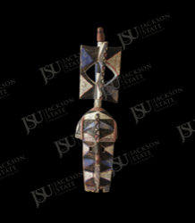

African Art Record
Geometric Mask or Figural Panel with Superstructure
Central African peoples, attribution uncertain
This carved wooden mask-like object or figural panel has a small lower face or body, bold black-and-white geometric painting, and an openwork rectangular superstructure above. The angular design relates broadly to Central African visual traditions, including Songye or Luba-related forms. The combination of painted geometry and openwork gives the object a striking graphic presence.
Collection Context
Catalog framing
This record is published as part of the Jackson State University African Art Collection and remains distinct from the Department of Art permanent collection browse path.
Low: geometric features suggest Central African comparison, but object type and culture are uncertain.
Object Description
Interpretive description
This carved wooden mask-like object or figural panel has a small lower face or body, bold black-and-white geometric painting, and an openwork rectangular superstructure above. The angular design relates broadly to Central African visual traditions, including Songye or Luba-related forms. The combination of painted geometry and openwork gives the object a striking graphic presence.